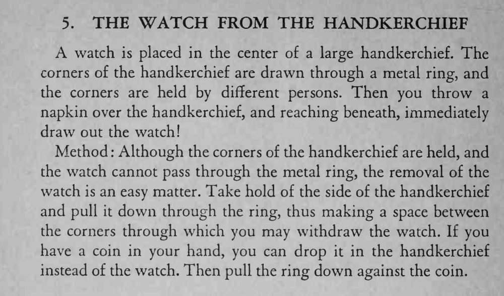

怀表包在大手帕中央，手帕四角穿过金属环由几位观众拉住；盖上餐巾再伸手进去，怀表竟被取了出来。
拉手帕时只拉一侧，缝隙要藏在餐巾底下，取表动作要干脆。

A watch is placed in the center of a large handkerchief. The corners of the handkerchief are drawn through a metal ring, and the corners are held by different persons. Then you throw a napkin over the handkerchief, and reaching beneath, immediately draw out the watch! Method Although the corners of the handkerchief are held, and the watch cannot pass through the metal ring, the removal of the watch is an easy matter. Take hold of the side of the handkerchief and pull it down through the ring, thus making a space between the corners through which you may withdraw the watch. If you have a coin in your hand, you can drop it in the handkerchief instead of the watch. Then pull the ring down against the coin.